Đầu chủ phát góc nhìn đang lọc ra ảnh, PDF hay Excel theo mẫu, kèm bài chép theo kênh; không cột nội bộ nào ra ngoài
Vì sao làm
Màn P1 (D) Số đo hai tuần thử gần nhất (Tham chiếu §11): Số lần phát bảng hàng — ngưỡng số đặt trước khi thử.
Đã hứa
- AC-1 — Given đầu chủ hay trưởng nhóm đang ở bảng hàng trên máy tính với một cách xem (lọc, cột, sắp) và k căn đang tích
- AC-2 — Given hộp thoại đã mở với n căn, When đi qua các bước, Then bước 1 có đúng năm mẫu — Bài Zalo, Bài Facebook,
- AC-3 — Given góc nhìn đang hiện các cột theo một thứ tự và một quy sắp, When xem trước bản xuất cho một người nhận, Then
- AC-4 — Given mẫu Bài Zalo hay Bài Facebook, When bấm «Chép bài», Then bài đúng khuôn của kênh (Zalo: một dòng một căn;
- AC-5 — Given mẫu Excel, When bấm «Tải file», Then máy tải `bang-hang-<ngày>.xlsx` một sheet: dòng đầu là nhãn cột, mỗi
- AC-6 — Given mẫu Ảnh (n ≤ 30) hay PDF, When bấm «Tải file», Then máy tải `bang-hang-<ngày>.png` là ảnh của bảng đã xem
- AC-7 — (cross-layer) Given một căn mồi có mọi trường nội bộ mang giá trị đánh dấu (chủ nhà, số điện thoại, giá đáy, ảnh
- AC-8 — (cross-layer) Given người chép bài hay tải file thành công, When lần ấy xong, Then máy chủ ghi đúng một lần xuất của sàn đang
- AC-9 — Given các lần xuất trong một kỳ, When tính số đo hai tuần thử, Then mã «Số lần xuất bảng hàng» ra đúng số lần
Thiết kế
_acceptance/phat-hang/design.md
Quyết định
- 2026-11-04 · Máy · approach · S1 — Đã tra tri thức: Đầu chủ phát góc nhìn đang lọc ra ảnh, PDF hay Excel theo mẫu, kèm bài chép theo kênh; không cột nội bộ nào ra ngoàiKho đã khai tri_thuc — bước thiết kế tra trang trước khi chọn.
- 2026-11-04 · Máy · approach · S1 — Hộp thoại Phát hàng mở trên bảng hàng và đọc thẳng cách xem, căn đang tích; /exports/new chuyển về bảng hàng mở hộp thoại.vo-va-ia §2 dòng Phát hàng ghi «lấy lựa chọn từ bảng hàng»; Tham chiếu §8 luật 4.
- 2026-11-04 · Máy · descope · S1 — Mẫu dựng sẵn ở lõi; sàn tự chỉnh mẫu phát hàng, mẫu bài để hàng Cài đặt sàn (mục 50).Tham chiếu §7: con số và lựa chọn là mặc định dựng sẵn, sàn chỉnh ở Cài đặt sàn; ADR-0018 hẹn bảng mẫu riêng.
- 2026-11-04 · Máy · approach · S1 — Mọi đầu ra (bài, bảng, Excel, ảnh, PDF) dựng qua một hàm lõi gọi banRaNgoai từng căn; trang chỉ vẽ bản đã ẩn.Tham chiếu §6 «Luật ẩn một chỗ cho mọi cửa ra»; AGENTS.md bất biến 4.
- 2026-11-04 · Máy · approach · S1 — Lần phát ghi ở bảng mới exports (migration 030), chỉ thêm; không lưu nội dung hay danh sách căn.Không bảng sự kiện hiện có nào mang lần phát (listing_events là của một căn); số đo §11 chỉ cần đếm.
- 2026-11-04 · Máy · approach · S1 — Bộ ghi .xlsx và .pdf tự viết ở lõi, không thêm thư viện; ảnh vẽ bằng canvas của trình duyệt.Kho đã tự viết bộ ghi .xlsx (packages/db/seed/xlsx.mjs) để khỏi thêm thư viện; không thư viện PDF hay ảnh nào có sẵn.
- 2026-11-04 · Máy · descope · S1 — bỏ design-pass — màn đi khuôn sẵn của nhóm bảng hàng, khối đích dialog-5 chủ kho đã chốt 02/11 trên bản quét 672 khối; Cổng Phạm vi duyệt bằng hình luồng đủ cột vỏ.vo-va-ia §2 «Chọn lại bằng khoá Pro (02/11)» chốt Phát hàng 43 dialog-5; không nhóm mới, không đổi khối đích, không Chỗ hở nên bước phân kỳ không mở.
- 2026-11-04 · Máy · approach · S1 — Hỏi-1: Phát hàng cho chọn người nhận Khách riêng không, mặc định là ai? Khuyến nghị: Cho chọn, mặc định Nhóm môi giới; khách riêng ẩn mã căn như trang khách.Nghĩa sản phẩm người dùng thấy — chỉ chủ kho quyết; hợp đồng viết theo khuyến nghị (design.md §7).
- 2026-11-04 · Máy · approach · S1 — Hỏi-2: Bản đầu có kèm trường riêng của sàn khi phát không? Khuyến nghị: Không kèm; bật từng trường để hàng sau.Nghĩa sản phẩm người dùng thấy — chỉ chủ kho quyết; hợp đồng viết theo khuyến nghị (design.md §7).
- 2026-11-04 · Máy · approach · S1 — Hỏi-3: Ảnh và PDF dựng thành ảnh (chữ trong PDF không chọn, không tìm được), không thêm thư viện? Khuyến nghị: Có — đủ gửi Zalo, in; ảnh tối đa 30 căn.Nghĩa sản phẩm người dùng thấy — chỉ chủ kho quyết; hợp đồng viết theo khuyến nghị (design.md §7).
- 2026-11-04 · Máy · approach · S1 — Hỏi-4: Bài Zalo một dòng một căn, bài Facebook mỗi căn một khối có dòng đầu tên sàn, không biểu tượng cảm xúc? Khuyến nghị: Có — vừa khổ tin Zalo, Facebook không nhận định dạng đậm.Nghĩa sản phẩm người dùng thấy — chỉ chủ kho quyết; hợp đồng viết theo khuyến nghị (design.md §7).
- 2026-11-04 · Máy · approach · S1 — Bộ ghi .xlsx và .pdf tự viết ở lõi, dùng lại bộ ghi .xlsx của dữ liệu mẫu, không thêm thư viện; ảnh vẽ bằng canvas của trình duyệt.Kho đã tự viết bộ ghi .xlsx để khỏi sửa package-lock.json; không thư viện PDF hay ảnh nào có sẵn.
- 2026-11-04 · Máy · approach · S1 — Hỏi-3: Excel, ảnh, PDF tự viết ở lõi không thêm thư viện (PDF là trang ảnh — chữ không chọn, không tìm được)? Thêm thư viện là được phép. Khuyến nghị: Tự viết bộ ghi Excel, PDF ở lõi và vẽ ảnh bằng canvas, không thêm thư viện — đủ gửi Zalo, in; ảnh tối đa 30 căn.Phản biện P0: lý do «không thêm thư viện» của bộ ghi mẫu là ranh giới hàng 5, không quyết cho hàng 43 — lựa chọn thư viện là đánh đổi người thấy, chỉ chủ kho quyết.
- 2026-11-04 · Máy · approach · S1 — Hỏi-3 gộp vào dòng mới ở trên (cùng câu hỏi, nói rõ thêm thư viện được phép).Gộp hai dòng nói cùng một lựa chọn để sổ không vừa máy quyết vừa chờ người.
- 2026-11-04 · Máy · approach · S1 — Hỏi-4: Bài Zalo một dòng một căn, bài Facebook mỗi căn một khối có dòng đầu tên sàn, không biểu tượng cảm xúc? Khuyến nghị: Có — vừa khổ tin Zalo, Facebook không nhận định dạng đậm.Nghĩa sản phẩm người dùng thấy — chỉ chủ kho quyết; hợp đồng viết theo khuyến nghị (design.md §7).
- 2026-11-04 · Người · seal · gate1 —
- 2026-11-04 · Máy · fix · S4-r1 — Lượt chấm 1 BLOCKED chỉ vì E1b: trang /inventory trên máy dev vừa khởi động tự tải lại liên tục, kẹt «Đang tải lần đầu»; chỗ thử thêm bước hâm nóng (mở bảng hàng một lần, chạm giờ sửa tệp bảng hàng để máy dev dựng lại) và kịch bản tự mở lại trang tối đa ba lần.Đo 04/11 trên dãy H: không 4xx/5xx nào, mỗi lần tải lại kèm «Compiled» của máy dev; chạm tệp bảng hàng một lần là trang đứng yên (do-tai từ máy dev lạnh sau bước hâm nóng: 0 lần tải lại); 14/15 bài còn lại đạt.
Bằng chứng
Các eval
| Eval | Tiêu chí | Loại | Verdict | run_id | verified_at |
|---|---|---|---|---|---|
| E1 | AC-1 | test | PASS | minted-phat-hang-E1-r1 | 2026-11-04T06:03:42Z |
| E1b | AC-1 | ui-check | PASS | minted-phat-hang-E1b-r1 | 2026-11-04T06:03:42Z |
| E2 | AC-2 | test | PASS | minted-phat-hang-E2-r1 | 2026-11-04T06:03:42Z |
| E3 | AC-3 | test | PASS | minted-phat-hang-E3-r1 | 2026-11-04T06:03:42Z |
| E4 | AC-4 | test | PASS | minted-phat-hang-E4-r1 | 2026-11-04T06:03:42Z |
| E5 | AC-5 | test | PASS | minted-phat-hang-E5-r1 | 2026-11-04T06:03:42Z |
| E6 | AC-6 | test | PASS | minted-phat-hang-E6-r1 | 2026-11-04T06:03:42Z |
| E6b | AC-6 | ui-check | PASS | minted-phat-hang-E6b-r1 | 2026-11-04T06:03:42Z |
| E7 | AC-7 | script | PASS | minted-phat-hang-E7-r1 | 2026-11-04T06:03:42Z |
| E7b | AC-7 | ui-check | PASS | minted-phat-hang-E7b-r1 | 2026-11-04T06:03:42Z |
| E8 | AC-8 | test | PASS | minted-phat-hang-E8-r1 | 2026-11-04T06:03:42Z |
| E8b | AC-8 | test | PASS | minted-phat-hang-E8b-r1 | 2026-11-04T06:03:42Z |
| E8c | AC-8 | ui-check | PASS | minted-phat-hang-E8c-r1 | 2026-11-04T06:03:42Z |
| E9 | AC-9 | test | PASS | minted-phat-hang-E9-r1 | 2026-11-04T06:03:42Z |
| E10 | AC-1 | script | PASS | minted-phat-hang-E10-r1 | 2026-11-04T06:03:42Z |
Chi tiết từng eval
PASS E1 · test
AC-1: Given đầu chủ hay trưởng nhóm đang ở bảng hàng trên máy tính với một cách xem (lọc, cột, sắp) và k căn đang tích
npm test -w @quy-hang/web duration_ms 1414.7365
PASS E1b · ui-check
AC-1: Given đầu chủ hay trưởng nhóm đang ở bảng hàng trên máy tính với một cách xem (lọc, cột, sắp) và k căn đang tích
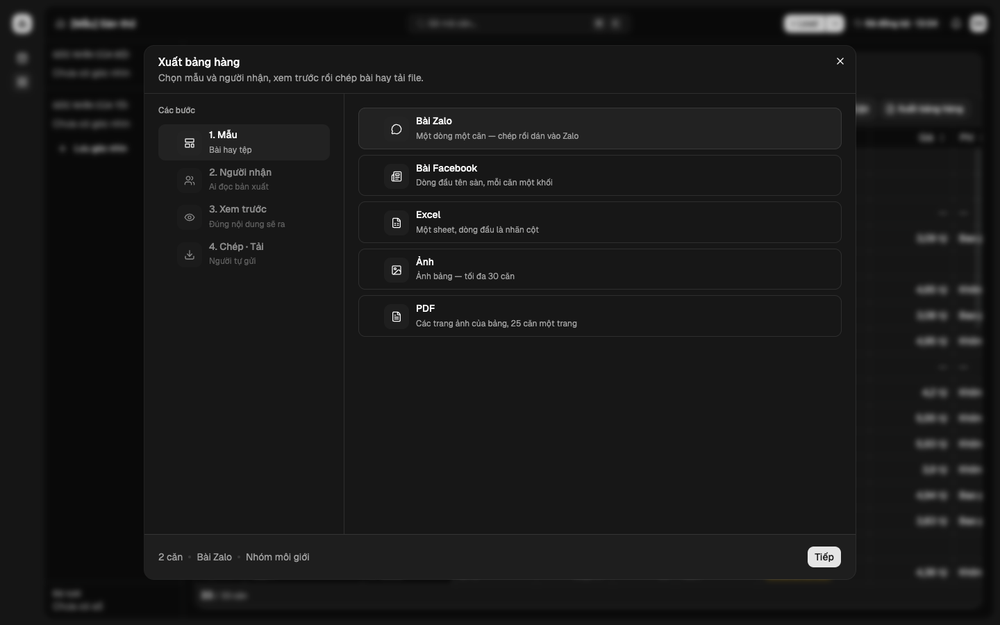
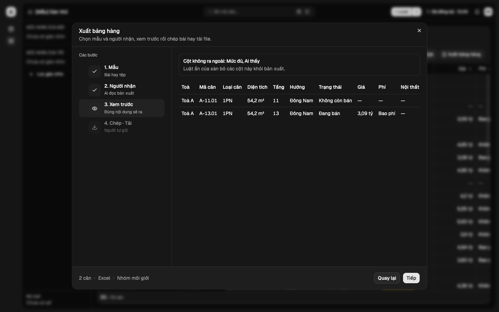
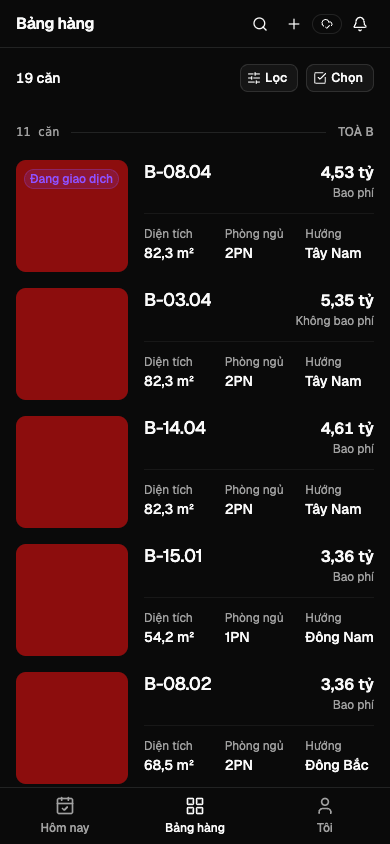

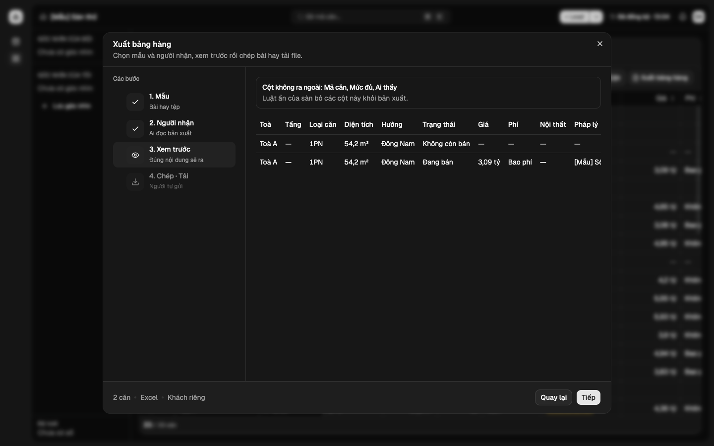
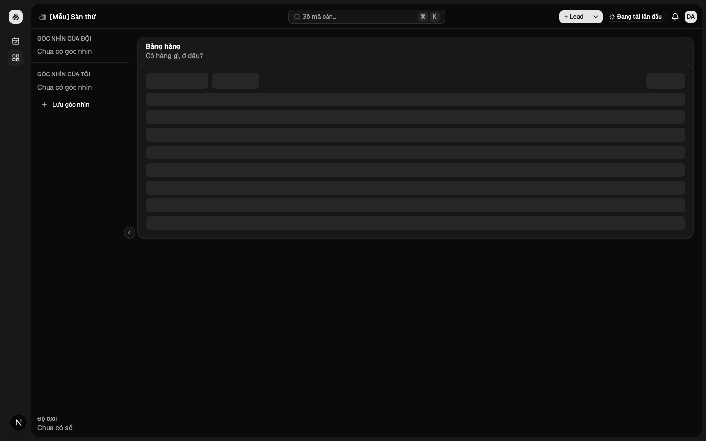
PASS E2 · test
AC-2: Given hộp thoại đã mở với n căn, When đi qua các bước, Then bước 1 có đúng năm mẫu — Bài Zalo, Bài Facebook,
npm test -w @quy-hang/core duration_ms 570.281917
PASS E3 · test
AC-3: Given góc nhìn đang hiện các cột theo một thứ tự và một quy sắp, When xem trước bản xuất cho một người nhận, Then
npm test -w @quy-hang/core duration_ms 570.281917
PASS E4 · test
AC-4: Given mẫu Bài Zalo hay Bài Facebook, When bấm «Chép bài», Then bài đúng khuôn của kênh (Zalo: một dòng một căn;
npm test -w @quy-hang/core duration_ms 570.281917
PASS E5 · test
AC-5: Given mẫu Excel, When bấm «Tải file», Then máy tải `bang-hang-<ngày>.xlsx` một sheet: dòng đầu là nhãn cột, mỗi
npm test -w @quy-hang/core duration_ms 570.281917
PASS E6 · test
AC-6: Given mẫu Ảnh (n ≤ 30) hay PDF, When bấm «Tải file», Then máy tải `bang-hang-<ngày>.png` là ảnh của bảng đã xem
npm test -w @quy-hang/core duration_ms 570.281917
PASS E6b · ui-check
AC-6: Given mẫu Ảnh (n ≤ 30) hay PDF, When bấm «Tải file», Then máy tải `bang-hang-<ngày>.png` là ảnh của bảng đã xem
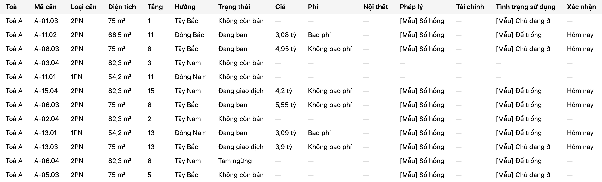
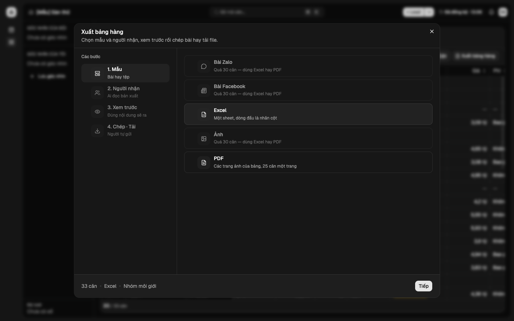

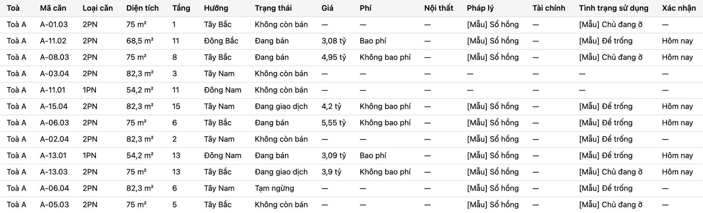
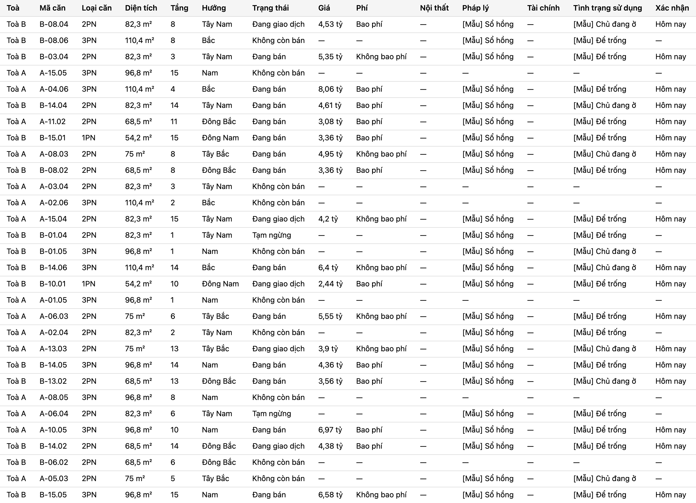
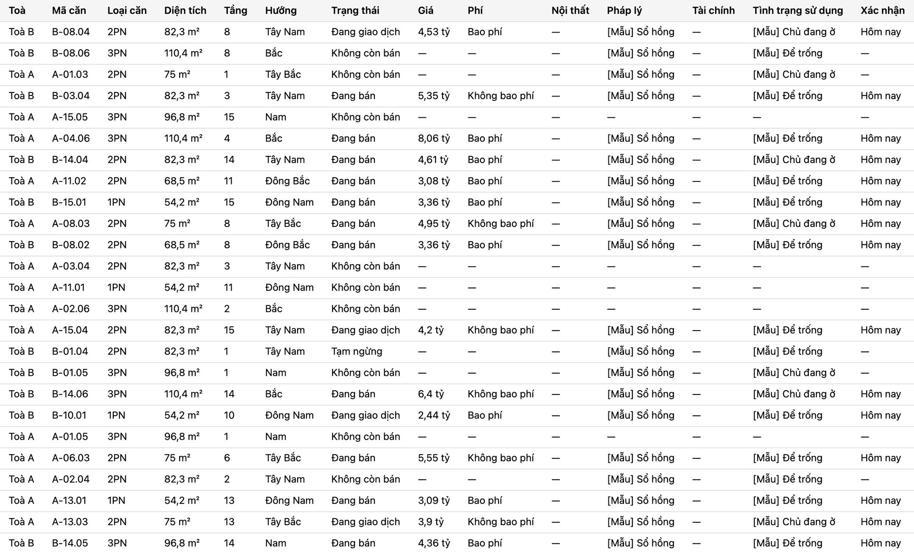
PASS E7 · script
AC-7: (cross-layer) Given một căn mồi có mọi trường nội bộ mang giá trị đánh dấu (chủ nhà, số điện thoại, giá đáy, ảnh
npm run test:ro-ri duration_ms 244.676792
PASS E7b · ui-check
AC-7: (cross-layer) Given một căn mồi có mọi trường nội bộ mang giá trị đánh dấu (chủ nhà, số điện thoại, giá đáy, ảnh
PASS E8 · test
AC-8: (cross-layer) Given người chép bài hay tải file thành công, When lần ấy xong, Then máy chủ ghi đúng một lần xuất của sàn đang
npm run db:migrate && npm run db:test duration_ms 45852.471084
PASS E8b · test
AC-8: (cross-layer) Given người chép bài hay tải file thành công, When lần ấy xong, Then máy chủ ghi đúng một lần xuất của sàn đang
npm test -w @quy-hang/web duration_ms 1414.7365
PASS E8c · ui-check
AC-8: (cross-layer) Given người chép bài hay tải file thành công, When lần ấy xong, Then máy chủ ghi đúng một lần xuất của sàn đang
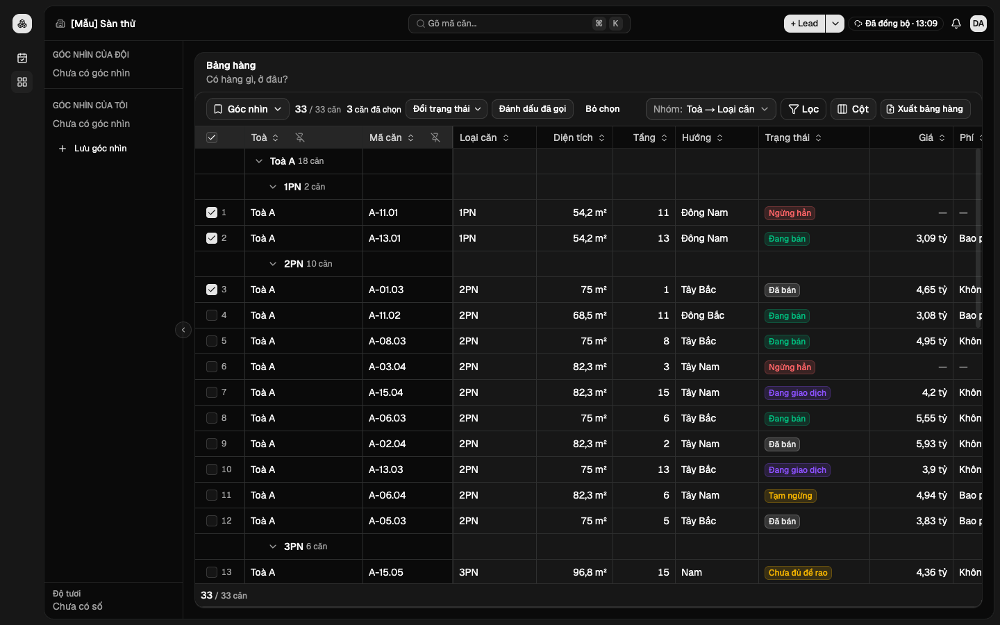
PASS E9 · test
AC-9: Given các lần xuất trong một kỳ, When tính số đo hai tuần thử, Then mã «Số lần xuất bảng hàng» ra đúng số lần
npm test -w @quy-hang/core duration_ms 570.281917
PASS E10 · script
AC-1: Given đầu chủ hay trưởng nhóm đang ở bảng hàng trên máy tính với một cách xem (lọc, cột, sắp) và k căn đang tích
design-floor-khuon --kiem --root . 20 tệp giao diện ngoài bản đồ
Eval không phân biệt (Analyst)
Vòng verify
- Round 1: mọi eval xanh; verdict PASS.
Tài nguyên
| Khối | Tác tử | Token đầu ra |
|---|
0 lượt chấm · tổng 0 token · 2 khối không đọc được
Giới hạn và ngoài hợp đồng
- Sàn tự chỉnh mẫu xuất bảng hàng, mẫu bài (Cài đặt sàn, mục 50) — hàng sau; bản đầu dùng mẫu dựng sẵn ở lõi (Tham chiếu §7).
- Kèm trường riêng của sàn khi xuất cho đội khác (bật từng trường) — hàng sau (Hỏi-2).
- PDF có lớp chữ chọn được, tìm được — chỉ khi chủ kho đổi Hỏi-3.
- Xuất bảng hàng trên điện thoại (Tham chiếu §9).
- Lưu nội dung hay danh sách căn của lần xuất, xem lại «Đã xuất» — chưa hàng nào cần.
- Xếp hàng gửi lại lần xuất ghi hỏng khi mất mạng.
- Route API ra ngoài sàn (luật đợt 39) — hàng này không mở route nào.
Giao
chưa ghi quan sát production
Giá trị
- Câu hỏi phép đo trả lời: [đề xuất] đã đạt «Đầu chủ phát góc nhìn đang lọc ra ảnh, PDF hay Excel theo mẫu, kèm bài chép theo kênh; không cột nội bộ nào ra ngoài» chưa? — chưa đo
- Kết quả nào là SỐNG: [đề xuất] Đầu chủ phát góc nhìn đang lọc ra ảnh, PDF hay Excel theo mẫu, kèm bài chép theo kênh; không cột nội bộ nào ra ngoài — chưa đo
- Kết quả nào là CHẾT: [đề xuất] chưa đạt «Đầu chủ phát góc nhìn đang lọc ra ảnh, PDF hay Excel theo mẫu, kèm bài chép theo kênh; không cột nội bộ nào ra ngoài» khi hết timebox — chưa đo
- Timebox: … — chưa đo